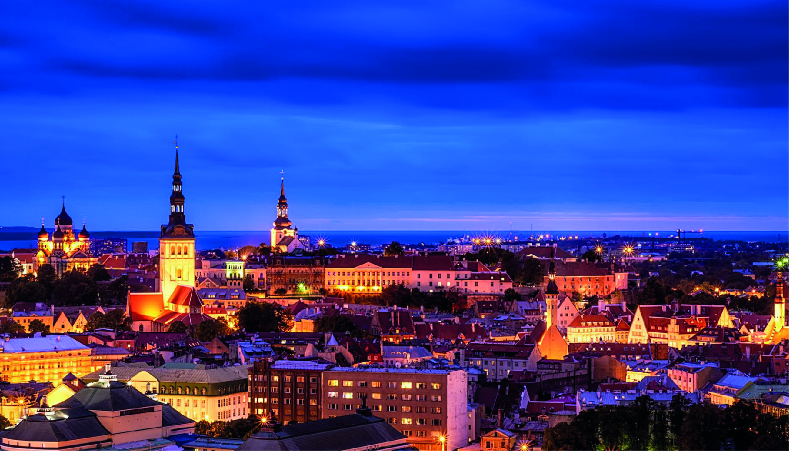
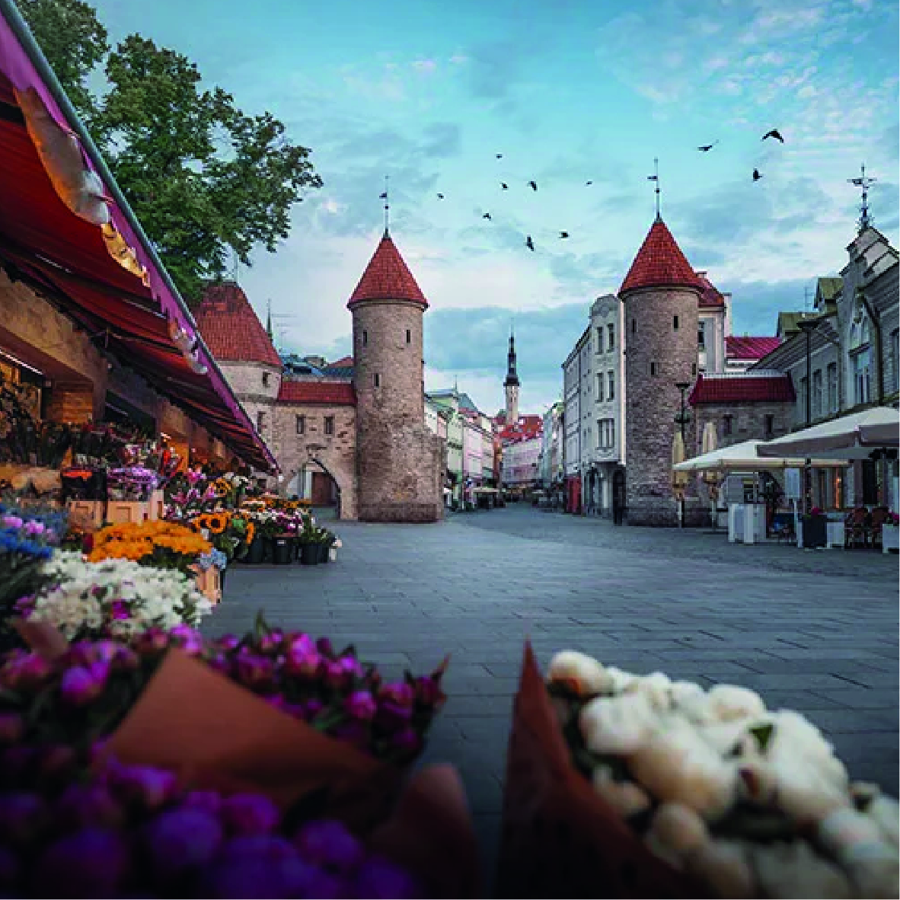
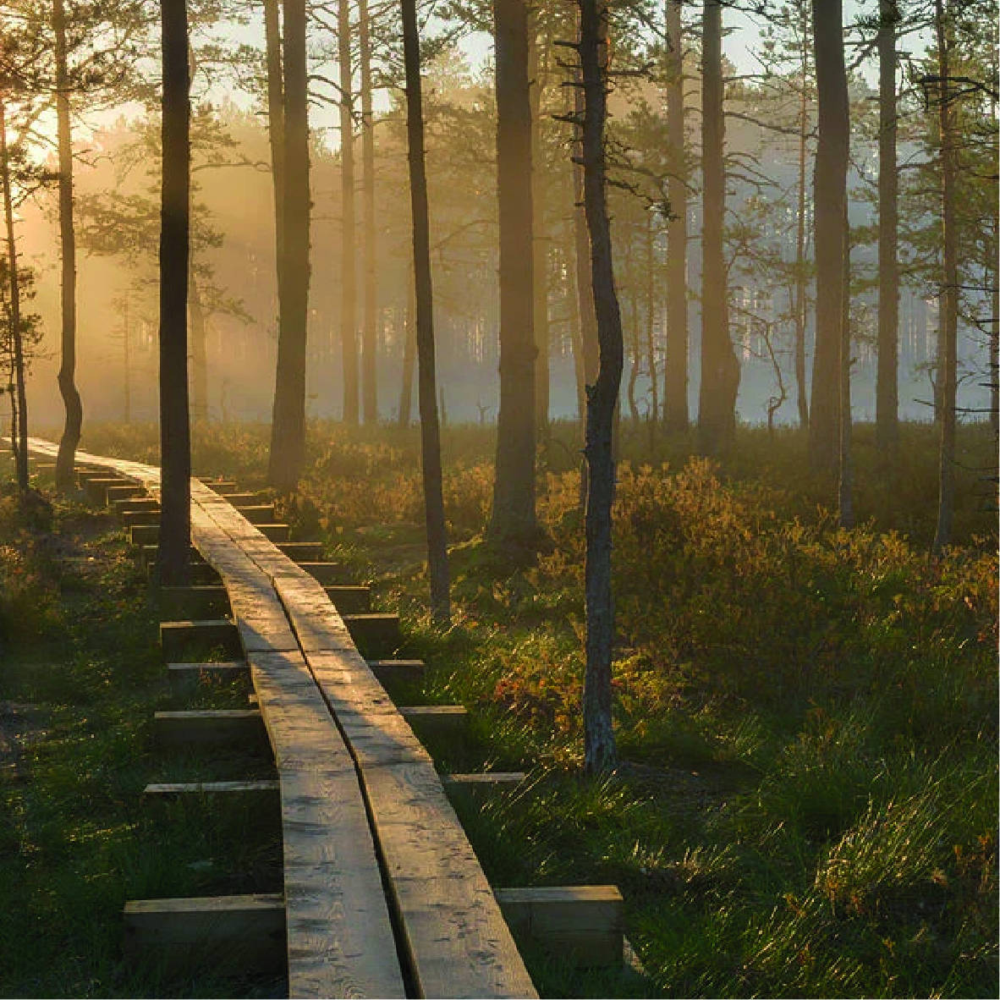
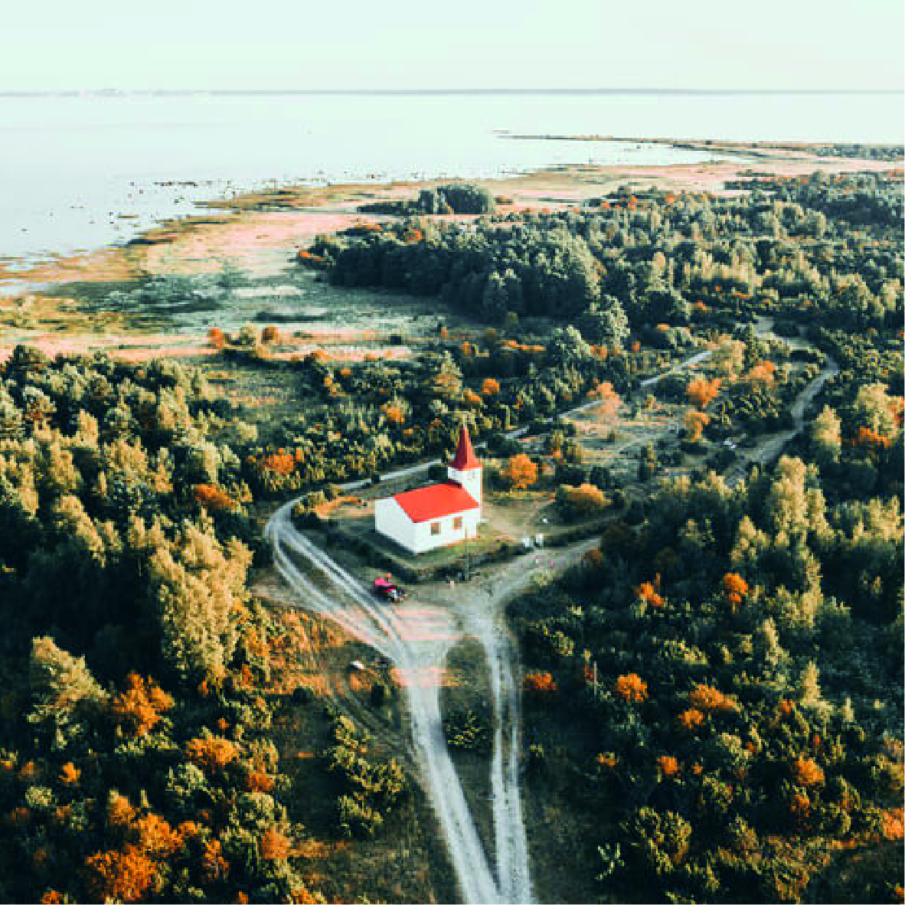

Tallinn is a unique city where the medieval Old Town, with its ancient towers and cobblestone streets, meets modern skyscrapers. Here you can enjoy a rich cultural scene, taste Estonian food, and explore beautiful parks and the seaside – a perfect destination for history and nature lovers alike.


